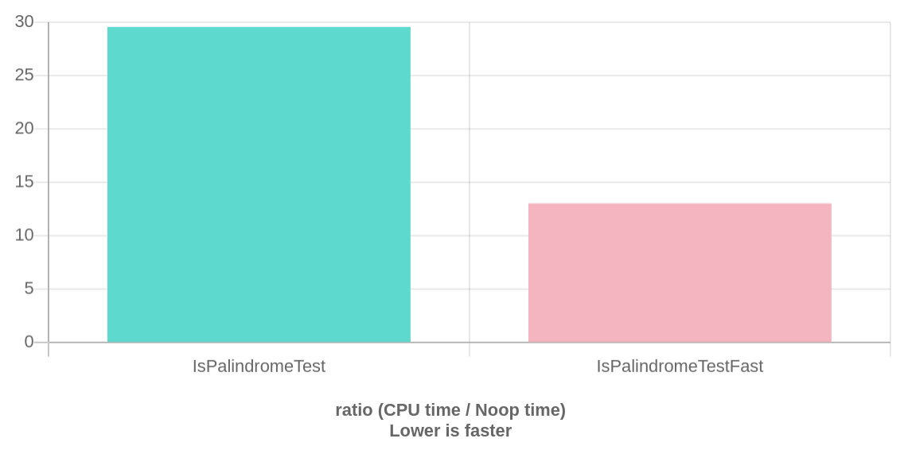

Having fun with Palindrome words
This article is not as interesting and reusable as other, but I think it might still be a nice example of how you we can speed up your code reducing the amount of branches.
The if statement is very fast and usually we should not worry about its runtime cost, but there could be few cases in which avoiding it can provide a visible improvement.
Coding interviews...
At the time of writing this article, I find myself in the wonderful world of job searching. As a consequence, you probably know what that implies: coding interviews!
I am fine with them, but the other day a person interviewing me asked the following question:
Can you write a function to find if a string is a palindrome?
And I was thinking...

To be fair, I am sure he his a great guy and he was just breaking the ice. He certainly had the best intentions, but I think it could have been more productive for both of us to look at some real-world code I wrote in production instead!
Nevertheless, this is the answer:
bool IsPalindrome(const std::string& str)
{
const size_t N = str.size();
const size_t N_half = N / 2;
for(size_t i=0; i<N_half; i++)
{
if( str[i] != str[N-1-i])
{
return false;
}
}
return true;
}
Easy-peasy :)
Booooring!
Let's have some fun!
A faster IsPalindrome()
The original version is apparently the best we can do:
- Zero copy.
- Stops the loop as soon as possible.
- Handles well all the corner cases.
But I realized that there is a way to make it faster, reducing the number of if clauses.
This can be easily achieved using entire "words" instead, i.e. storing the single bytes in larger data types.
For instance, let's use the type uint32_t to manipulate 4 bytes at once.
The resulting implementation will be:
#include <byteswap.h>
inline bool IsPalindromeWord(const std::string& str)
{
const size_t N = str.size();
const size_t N_half = (N/2);
const size_t S = sizeof(uint32_t);
// number of words of size S in N_half
const size_t N_words = (N_half / S);
// example: if N = 18, half string is 9 bytes and
// we need to compare 2 pairs of words and 1 pair of chars
size_t index = 0;
for(size_t i=0; i<N_words; i++)
{
uint32_t word_left, word_right;
memcpy(&word_left, &str[index], S);
memcpy(&word_right, &str[N - S - index], S);
if( word_left != bswap_32(word_right))
{
return false;
}
index += S;
}
// remaining bytes.
while(index < N_half)
{
if( str[index] != str[N-1-index])
{
return false;
}
index++;
}
return true;
}
What is going on here?
We are storing "blocks" (words) of 4 bytes and call the comparison operator only once for each word.
To reverse the order of the bytes in a "specular" way, we use the built-in function bswap_32.
Note that the hand-made implemetation of this function is equally fast in my benchmarks.
inline uint32_t Swap(const uint32_t& val)
{
union {
char c[4];
uint32_t n;
} data;
data.n = val;
std::swap(data.c[0], data.c[3]);
std::swap(data.c[1], data.c[2]);
return data.n;
}
Benchmark:

For sufficiently long strings (more than 8 bytes), the performance gain is about 50% for relatively short string to 150% for long ones.
Actually, for very long strings, we might use words of 128 or 256 bits. This can be achieved using SIMD, but this is not the purpose of this article.
Summarizing
This is not a good example of "keep your code simple and readable, don't worry too much about optimizations".
I am mostly showing this for fun and to highlight that in some cases the cost of branches in our code can we non-negligible and it might open the opportunity for some cool optimizations.